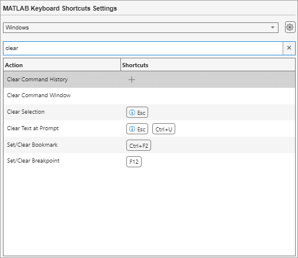
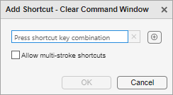
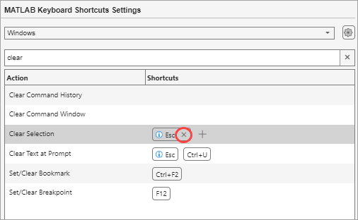

Customize Keyboard Shortcuts
You can view and customize the keyboard shortcuts in MATLAB® using the Keyboard Shortcuts Settings page in the Settings window. To open the Keyboard Shortcut Settings page, on the Home tab, in the Environment section, click Settings. Then, select MATLAB > Keyboard > Shortcuts.
View Shortcuts for Action
To find the keyboard shortcuts for an action, in the search box at the top of the
Keyboard Shortcuts Settings page, type the name of the action. For example, type
clear to find the keyboard shortcut for clearing selected
text. MATLAB displays the list of actions that contain your search text and their
keyboard shortcuts. The keyboard shortcut for the Clear
Selection action is the Escape key.
For actions available as a menu item (such as in a toolstrip or context menu), you also can view the keyboard shortcut for the action in the menu itself. If a menu item does not display a keyboard shortcut, then a keyboard shortcut for the action does not exist.

Customize Shortcuts for Action
You can add new keyboard shortcuts or modify and delete existing keyboard shortcuts for an action.
Note
Some keyboard shortcuts cannot be customized. Actions for which you cannot customize the keyboard shortcuts do not appear when you search for them on the Keyboard Shortcuts Settings page. Examples of these actions include canceling the current action (Esc), interrupting MATLAB execution (Ctrl+C), and some of the navigational actions described in Use Keyboard Shortcuts to Navigate MATLAB.
Add Shortcut
To add a keyboard shortcut for an action:
In the search box at the top of the Keyboard Shortcuts Settings page, type the name of the action or an existing keyboard shortcut. You can specify a keyboard shortcut by either pressing the keystrokes or typing the key names.
Select the name of the action that you want to add a keyboard shortcut for.
In the Shortcuts column, click the Add shortcut button.
In the dialog box that opens, enter a keyboard shortcut by pressing a combination of one or more modifiers (Alt, Shift, or Ctrl) and another key. For example, to enter the keyboard shortcut Ctrl+Shift+Y, press the Ctrl key, the Shift key, and the Y key.
To enter a special key such as Tab or Esc, click the Add special keys button and select from the available options.
To specify multiple keystrokes for an action, select the Allow multi-stroke shortcuts check box. When the Allow multi-stroke shortcuts check box is selected, you can specify up to two keystrokes for a keyboard shortcut. For example, you can specify Ctrl+Y, Shift+Z as the keyboard shortcut for an action.
If the keyboard shortcut that you enter conflicts with the keyboard shortcut for another action, the dialog box displays the conflict in the Shortcut Conflicts section. To resolve a conflict, change or delete shortcuts so that each shortcut corresponds to a unique action.
There is no requirement to resolve keyboard shortcut conflicts. However, if the same shortcut specifies two different actions, the shortcuts can be confusing to use.

Click OK to add the keyboard shortcut.
Modify and Delete Shortcuts
To modify an existing keyboard shortcut for a selected action, double-click the shortcut key combination in the Shortcuts column or select it and press Enter to open the Edit Shortcut dialog box. To delete a keyboard shortcut for a selected action, click the Delete shortcut button to the right of the shortcut.

Restore Default Keyboard Shortcuts
If you modify keyboard shortcuts and then decide not to keep the changes, you can restore the default shortcuts. To restore the default state of all keyboard shortcuts, on the Keyboard Shortcuts Settings page, click the settings button at the top right and select Restore defaults. To undo a change to a specific action, select the action and click the Restore defaults button at the right.
Use Different Keyboard Shortcut Set
By default, MATLAB uses the set of keyboard shortcuts defined for your current platform. To use a different set of keyboard shortcuts, in the list at the top of the Keyboard Shortcuts Settings page, select from the available sets. To use a set of keyboard shortcuts that is not in the list, click the settings button and select Browse.
You also can download keyboard shortcut settings files from File Exchange. For example, to restore the MATLAB default keyboard shortcuts that were in place for MATLAB Version 7.9 (R2009a) and earlier releases, go to File Exchange and search for MATLAB Desktop R2009a Default Keyboard Shortcut sets. Download and extract the set, and then select it as the active keyboard shortcut set. A valid keyboard shortcut settings file appears with a keyboard key icon .
Save Current Keyboard Shortcut Set
To save the current set of keyboard shortcuts, on the Keyboard Shortcuts Settings page, click the settings button and select Save As. Then, specify the name and location of the JSON file to save the shortcuts to.
Compare Keyboard Shortcut Sets
To compare the current set of keyboard shortcuts to another set:
On the Keyboard Shortcuts Settings page, click the settings button and select Compare
currentset with.From the menu, select the set of keyboard shortcuts that you want to compare the current set to.
The Comparison Tool opens and displays the two keyboard shortcut sets side-by-side. For more information about how to interpret the results, see Compare Text Files.
Create Printable List of All Keyboard Shortcuts
To create a printable list of the current set of keyboard shortcuts, on the Keyboard Shortcuts Settings page, click the settings button and select Copy to clipboard. Then, paste the copied list of shortcuts into a spreadsheet application, such as Microsoft® Excel®, or a text file. For the best formatting, use a spreadsheet application.